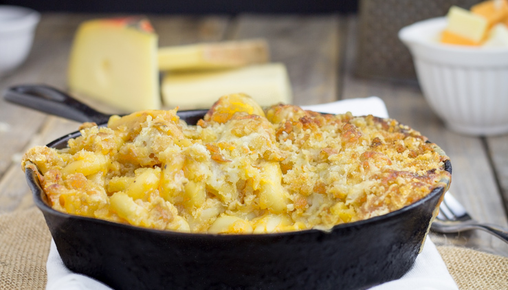

Baked Macaroni and Cheese

Description
This recipe goes over how to make a delicious baked mac & cheese dish.
Ingredients
- 1 (12 ounce) package macaroni
- 2 cups of milk
- 1 large egg
- 2.5 cups of shredded Cheddar cheese
- 2 tablespoons of melted butter
- Salt and pepper for taste
Steps
- Preheat the oven to 350 degrees F (175 degrees C). Lightly grease a 2-quart baking dish.
- Boil macaroni in a large pot of salted water until barely done, about 5 minutes. Drain and set aside
- Whisk milk and egg together in a large bowl; stir in cheese and butter.
- Place par-boiled macaroni in the prepared baking dish. Pour milk mixture over macaroni, season with salt and pepper, and stir until combined. Press mixture evenly into the baking dish.
- Bake, uncovered, in the preheated oven until top is browned, 30 to 40 minutes.
- Serve hot and enjoy!
Original Recipe
Home